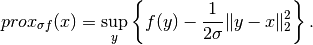

FunctionalProduct.proximal¶
-
FunctionalProduct.proximal¶ Proximal factory of the functional.
Notes
The proximal operator of a function
 is an operator defined as
is an operator defined as
Proximal operators are often used in different optimization algorithms, especially when designed to handle nonsmooth functionals.
A
proximal factoryis a function that, when called with a step length , returns the corresponding proximal operator.
, returns the corresponding proximal operator.The nonsmooth solvers that make use of proximal operators to solve a given optimization problem take a
proximal factoryas input, i.e., a function returning a proximal operator. See for exampleforward_backward_pd.